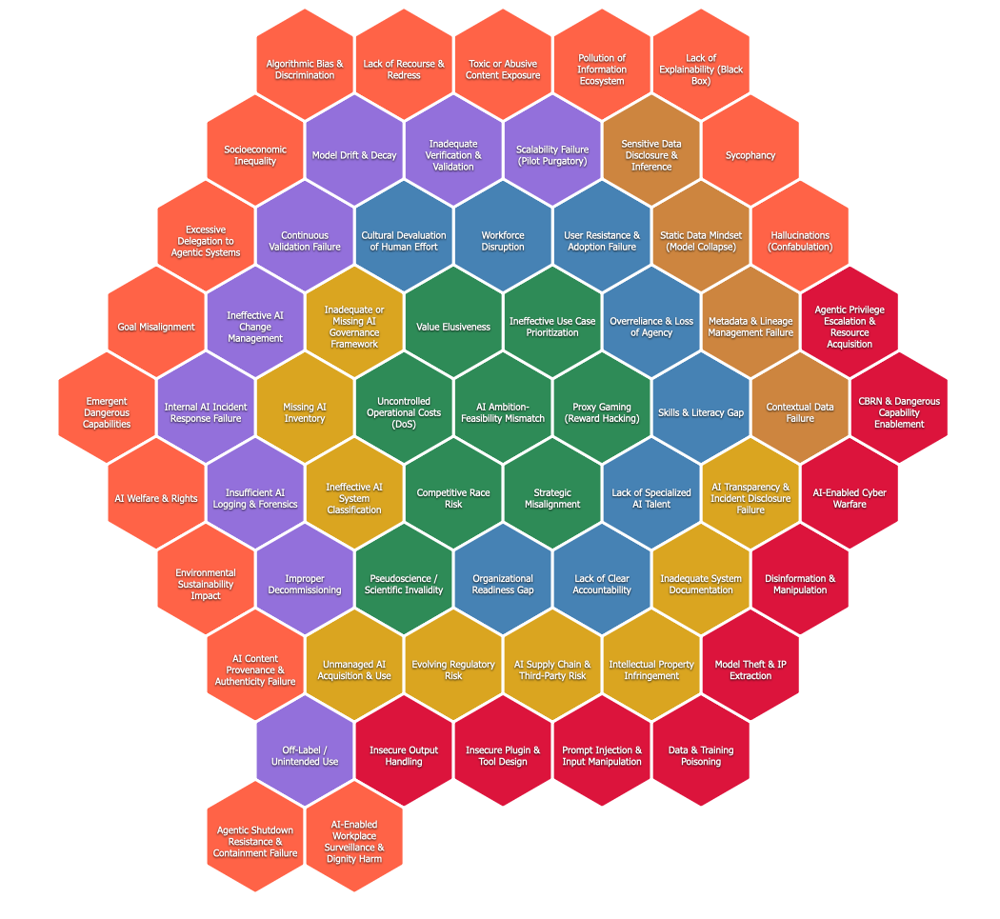
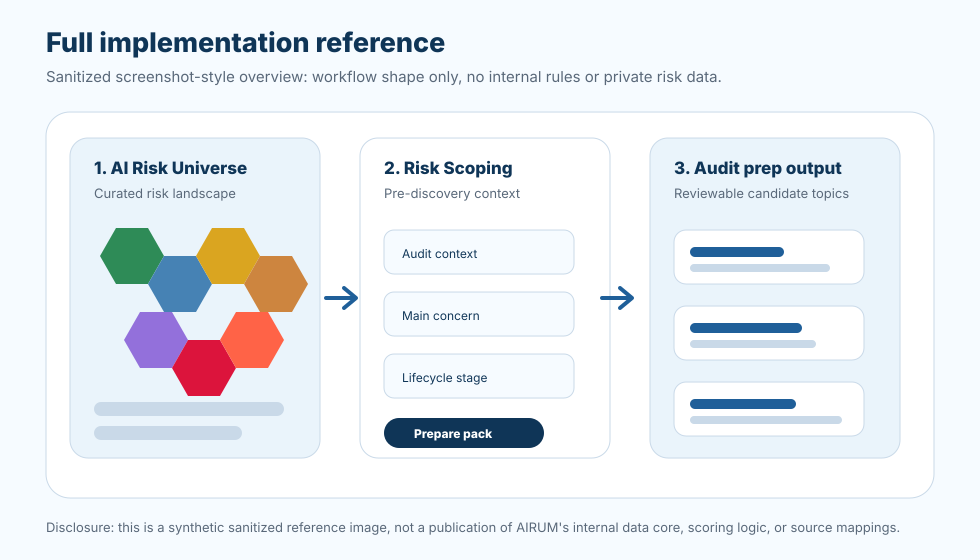

Reduced AIRUM Public Demo: v3.2.1
Assurance Boundary
No private audit material. AIRUM is a pre-discovery preparation aid. It does not provide legal advice, does not provide audit assurance, does not provide source-perfect validation, and does not provide final workpapers. The public demo uses disclosure-safe source labels and summaries and does not publish internal source evidence, licensed-source locators, local vault paths, or private source-to-control rationale.
Part 1 - AI Risk Universe
Explore the reduced AI risk universe
AIRUM starts as a curated universe of AI risks. This public version intentionally shows a reduced source-backed subset with disclosure-safe source labels, using the original risk text for the visible sections while withholding the complete data core and selection methodology.
Honeycomb view
The original AIRUM idea is a risk universe: many AI risks arranged as a reviewable landscape, not a linear checklist. This reduced demo uses a sanitized honeycomb to show that concept without publishing the full risk universe.
Original-style honeycomb reference
This is the original AIRUM honeycomb reference visual: a full risk landscape with risk titles inside the cells. The reduced demo below uses the same title-in-cell idea for the visible source-backed subset.
Open reference image
Browse risk examples
The 10 visible risks use reduced AIRUM risk text plus the mapped applicable controls, control objectives, control source labels, and dedicated audit procedure detail links.
Part 2 - Risk Scoping
Frame a demo audit context
Risk Scoping uses the 10 source-backed demo risks below. It creates candidate discussion topics, not final audit-scope decisions. In the full AIRUM solution, this step would combine a richer audit context with the complete AI Risk Universe, group selected risks by audit use, and prepare a reviewable discovery pack for the audit team.
Full implementation reference
This screenshot-style reference shows the shape of the full AIRUM workflow without publishing internal rules, data mappings, or non-public risk content.
Open reference image
What the full solution would usually do here
The public controls above only re-rank the reduced demo risks into candidate discovery-preparation topics. In the full AIRUM solution, this step would normally collect more audit context, apply the complete risk universe and internal selection logic, separate baseline governance checks from direct process risks and specialist dependencies, and produce an exportable discovery working paper.
The reduced public example shows the intended output shape: selected AI Risks, why each appears, applicable controls, control-level audit procedure guidance, discovery questions, and evidence to request.
Challenge this output
For each candidate topic, ask: why did this risk appear; which assumption caused it; what evidence would remove it; what evidence would escalate it; what specialist or legal/compliance review is needed; and which disclosure-safe source family supports the expected control?
Candidate discovery-preparation topics
The demo pack now mirrors the newer AIRUM planning shape more closely: prioritized candidate topics, why they were selected, discovery focus, applicable controls, control-level audit procedure links, lifecycle context, and disclosure-safe source labels. It remains a reduced demo, not the full AIRUM method.
What the demo is not
- Not source-perfect validation or publication of internal source evidence.
- Not legally validated; regulatory references are risk prompts requiring legal/compliance review.
- Not final audit workpaper material without engagement-specific tailoring.
- Not the complete AIRUM data core.
- Not a final audit-scope decision.
- Not a residual-risk rating.
- Not a control-effectiveness conclusion.
- Not legal, compliance, security, safety, or governance assurance.